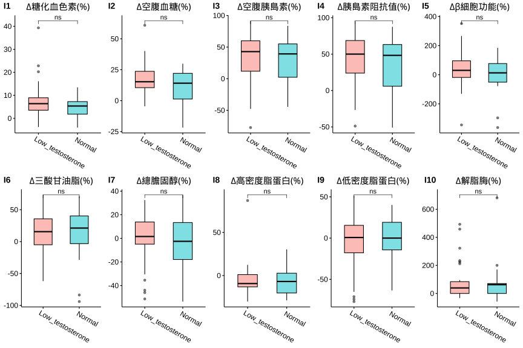

1.7 分層分析-2: 男性:睪固酮(Testosterone)
依據睪固酮(Testosterone)初始狀態進行分層分析，分成二個組別：
- 睪固酮低下: (小於 <350 ng/dl)
- 睪固酮正常: (大於 >350 ng/dl)
男性睪固酮分組&年齡分佈
|
|
|
相關分析(Correlation Analysis)
睪固酮(Testosterone) x 初始狀態(Baseline)
男性荷爾蒙「睪固酮」血中濃度與「體重」、「體脂」，以及「空腹血糖」、「空腹胰島素」和「胰島素抗性」(IR)具有顯著負相關。換句話說，相較於「睪固酮」濃度正常的人，「睪固酮」低下者傾向有較高的「體重」、「體脂」，「空腹血糖」、「空腹胰島素」和「胰島素抗性」(IR)也較高。


成效(Effectiveness)
成效(%)-Blood

| Low | Normal | 顯著差異 | |
|---|---|---|---|
| 人數 | 35 | 21 | |
| 體重(T0) | 96.36 ± 2.82 | 87.31 ± 2.03 |
|
| BMI(T0) | 31.53 ± 0.97 | 28.93 ± 0.58 | ns |
| 體脂重(T0) | 33.18 ± 2.09 | 24.78 ± 1.25 | ** |
| 體脂率(T0) | 33.55 ± 1.22 | 28.1 ± 0.99 | ** |
| 骨骼肌質量指數(T0) | 8.83 ± 0.14 | 8.77 ± 0.11 | ns |
| 骨骼肌率(T0) | 37.56 ± 0.69 | 40.75 ± 0.57 | ** |
| 內臟脂肪面積(T0) | 135.27 ± 8.73 | 96.6 ± 4.86 |
|
| 腰圍(T0) | 107.91 ± 2.49 | 100.4 ± 3.49 |
|
| 除脂體重(T0) | 63.18 ± 1.24 | 62.54 ± 1.18 | ns |
| 基礎代謝率(T0) | 1734.63 ± 26.77 | 1720.81 ± 25.55 | ns |
| 糖化血色素(T0) | 5.94 ± 0.17 | 5.63 ± 0.07 | ns |
| 空腹血糖(T0) | 98.14 ± 4.57 | 87.95 ± 1.81 | ns |
| 空腹胰島素(T0) | 17.26 ± 1.5 | 16.39 ± 2.42 | ns |
| 胰島素阻抗值(T0) | 4.34 ± 0.53 | 3.59 ± 0.53 | ns |
| β細胞功能(T0) | 213.54 ± 18.84 | 261.52 ± 40.54 | ns |
| 三酸甘油脂(T0) | 190.46 ± 17.83 | 145.38 ± 17.04 | ns |
| 總膽固醇(T0) | 198.06 ± 5.61 | 201.19 ± 9.29 | ns |
| 高密度脂蛋白(T0) | 44.7 ± 1.89 | 43.3 ± 2.02 | ns |
| 低密度脂蛋白(T0) | 124.54 ± 4.85 | 139.43 ± 8.09 | ns |
| 解脂脢(T0) | 26.29 ± 2.75 | 23.2 ± 2.73 | ns |
| 體重(T1) | 89.97 ± 2.71 | 80.82 ± 2.11 |
|
| BMI(T1) | 29.47 ± 0.95 | 26.78 ± 0.61 | ns |
| 體脂重(T1) | 28.76 ± 2.03 | 20.04 ± 1.28 | ** |
| 體脂率(T1) | 30.94 ± 1.31 | 24.41 ± 1.09 | ** |
| 骨骼肌質量指數(T1) | 8.57 ± 0.13 | 8.52 ± 0.12 | ns |
| 骨骼肌率(T1) | 38.93 ± 0.74 | 42.7 ± 0.6 | ** |
| 內臟脂肪面積(T1) | 109.65 ± 7.52 | 78.51 ± 4.95 |
|
| 腰圍(T1) | 101.29 ± 2.52 | 92.94 ± 3.8 | ** |
| 除脂體重(T1) | 61.21 ± 1.14 | 60.79 ± 1.19 | ns |
| 基礎代謝率(T1) | 1692.17 ± 24.59 | 1682.95 ± 25.59 | ns |
| 糖化血色素(T1) | 5.43 ± 0.09 | 5.33 ± 0.07 | ns |
| 空腹血糖(T1) | 77.63 ± 1.74 | 77.38 ± 1.94 | ns |
| 空腹胰島素(T1) | 10.11 ± 1.03 | 11.3 ± 2.16 | ns |
| 胰島素阻抗值(T1) | 1.98 ± 0.21 | 2.27 ± 0.47 | ns |
| β細胞功能(T1) | 256.02 ± 46.01 | 225.35 ± 62.12 | ns |
| 三酸甘油脂(T1) | 149.83 ± 12.9 | 112.38 ± 12.84 | ns |
| 總膽固醇(T1) | 197.46 ± 8.07 | 208.52 ± 13.51 | ns |
| 高密度脂蛋白(T1) | 42.2 ± 1.83 | 40.74 ± 2.36 | ns |
| 低密度脂蛋白(T1) | 128.63 ± 7.26 | 144.33 ± 10.7 | ns |
| 解脂脢(T1) | 42.57 ± 6.09 | 40.76 ± 6.74 | ns |
| 年齡 | 41.11 ± 2.04 | 37.62 ± 2.27 | ns |
| 飲食紀錄完成率(%) | 60.65 ± 5.54 | 60.85 ± 7.7 | ns |
| 紀錄數量 | 153.83 ± 27.37 | 217 ± 45.57 | ns |
| 上傳照片張數 | 140.26 ± 25.41 | 123.52 ± 20.49 | ns |
| 碳水攝取率(E%) | 17.58 ± 1.03 | 18.07 ± 1.78 | ns |
| 蛋白攝取率(E%) | 27.91 ± 0.44 | 28.21 ± 0.66 | ns |
| 脂肪攝取率(E%) | 54.51 ± 0.79 | 53.72 ± 1.3 | ns |
| 總攝取熱量(日) | 1126.62 ± 36.66 | 1080.27 ± 50.28 | ns |
| 綠燈率 | 83.6 ± 2.35 | 77.03 ± 4.4 | ns |
| 黃燈率 | 12.76 ± 1.52 | 22.09 ± 4.47 | ns |
| 紅燈率 | 3.64 ± 1.36 | 0.88 ± 0.43 | ns |
| 水果(日) | 0.08 ± 0.03 | 0.07 ± 0.03 | ns |
| 蔬菜(日) | 3.51 ± 0.21 | 3.39 ± 0.23 | ns |
| 全穀雜糧(日) | 2.05 ± 0.22 | 1.93 ± 0.33 | ns |
| 蛋豆魚肉(日) | 10.08 ± 0.38 | 9.82 ± 0.6 | ns |
| 乳品(日) | 0.05 ± 0.01 | 0.07 ± 0.02 | ns |
| 油脂(日) | 4.11 ± 0.21 | 3.77 ± 0.21 | ns |
| ∆體重 | 6.38 ± 0.55 | 6.49 ± 0.54 | ns |
| ∆BMI | 2.06 ± 0.17 | 2.15 ± 0.18 | ns |
| ∆體脂重 | 4.41 ± 0.32 | 4.74 ± 0.49 | ns |
| ∆體脂率 | 2.61 ± 0.25 | 3.69 ± 0.47 |
|
| ∆骨骼肌質量指數 | -0.27 ± 0.05 | -0.25 ± 0.04 | ns |
| ∆骨骼肌重 | -1.2 ± 0.23 | -1.1 ± 0.21 | ns |
| ∆內臟脂肪面積 | 20.39 ± 1.59 | 23.82 ± 2.16 | ns |
| ∆腰圍 | 6.62 ± 0.58 | 7.46 ± 0.69 | ns |
| ∆除脂體重 | 1.97 ± 0.37 | 1.75 ± 0.34 | ns |
| ∆基礎代謝率 | -42.46 ± 8.1 | -37.86 ± 7.16 | ns |
| ∆糖化血色素 | 0.51 ± 0.12 | 0.3 ± 0.05 | ns |
| ∆空腹血糖 | 20.51 ± 4.02 | 10.57 ± 2.79 | ns |
| ∆空腹胰島素 | 6.71 ± 1.52 | 5.09 ± 1.87 | ns |
| ∆胰島素阻抗值 | 2.36 ± 0.53 | 1.31 ± 0.42 | ns |
| ∆β細胞功能 | 42.48 ± 44.33 | -36.17 ± 60.14 | ns |
| ∆三酸甘油脂 | 40.63 ± 13.77 | 33 ± 14.52 | ns |
| ∆總膽固醇 | 0.6 ± 7.04 | -7.33 ± 11.51 | ns |
| ∆高密度脂蛋白 | -2.5 ± 1.41 | -2.57 ± 1.79 | ns |
| ∆低密度脂蛋白 | -4.09 ± 6.39 | -4.9 ± 9.24 | ns |
| ∆解脂脢 | 16.29 ± 5.1 | 16.15 ± 5.71 | ns |
| ∆體重(%) | 6.61 ± 0.57 | 7.51 ± 0.64 | ns |
| ∆BMI(%) | 6.61 ± 0.57 | 7.49 ± 0.63 | ns |
| ∆體脂重(%) | 14.39 ± 1.11 | 19.92 ± 2.04 |
|
| ∆體脂率(%) | 8.4 ± 0.87 | 13.55 ± 1.81 | ** |
| ∆骨骼肌質量指數(%) | -2.94 ± 0.52 | -2.89 ± 0.48 | ns |
| ∆骨骼肌重(%) | -3.21 ± 0.64 | -3.08 ± 0.61 | ns |
| ∆內臟脂肪面積(%) | 15.74 ± 0.98 | 25.12 ± 1.95 | ** |
| ∆腰圍(%) | 6.2 ± 0.53 | 7.67 ± 0.71 | ns |
| ∆除脂體重(%) | 2.98 ± 0.59 | 2.79 ± 0.55 | ns |
| ∆基礎代謝率(%) | -2.36 ± 0.46 | -2.19 ± 0.42 | ns |
| ∆糖化血色素(%) | 7.59 ± 1.32 | 5.34 ± 0.96 | ns |
| ∆空腹血糖(%) | 18.33 ± 2.2 | 11.11 ± 3.17 | ns |
| ∆空腹胰島素(%) | 30.65 ± 6.97 | 29.42 ± 8.16 | ns |
| ∆胰島素阻抗值(%) | 42.88 ± 6.06 | 34.1 ± 9.31 | ns |
| ∆β細胞功能(%) | 44.21 ± 20.72 | -0.39 ± 28.65 | ns |
| ∆三酸甘油脂(%) | 13.87 ± 5.25 | 12.15 ± 9.43 | ns |
| ∆總膽固醇(%) | -0.5 ± 3.63 | -4.33 ± 5.5 | ns |
| ∆高密度脂蛋白(%) | -4.44 ± 3.14 | -5.13 ± 3.72 | ns |
| ∆低密度脂蛋白(%) | -4.64 ± 5.65 | -5.11 ± 6.59 | ns |
| ∆解脂脢(%) | 80.77 ± 21.42 | 82.32 ± 33.34 | ns |
|
Significance: Comparison: Testosterone in male population. |